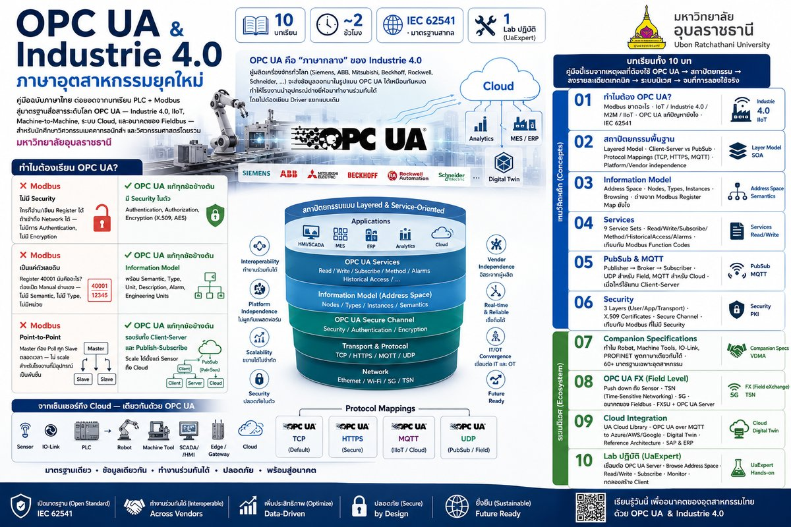
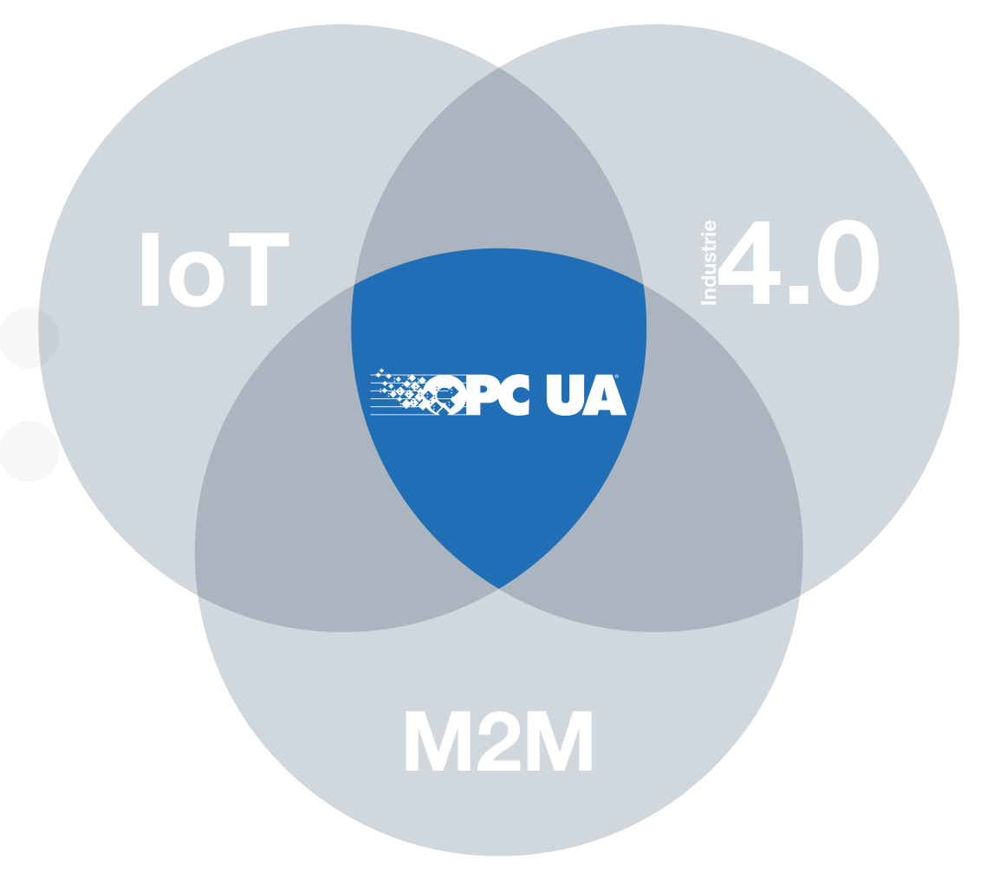

Industrial Interoperability · IEC 62541 · Year 3–4 Mechatronics
OPC UA & Industrie 4.0
คู่มือฉบับภาษาไทย ต่อยอดจากบทเรียน PLC + Modbus สู่มาตรฐานสื่อสารระดับโลก
OPC UA — Industrie 4.0, IIoT, Machine-to-Machine, ระบบ Cloud, และอนาคตของ Fieldbus
— สำหรับนักศึกษาวิศวกรรมเมคคาทรอนิกส์ฯ และวิศวกรรมศาสตร์โดยรวม มหาวิทยาลัยอุบลราชธานี
📦 10 บทเรียน
🕐 ~2 ชั่วโมง
🌐 IEC 62541 · มาตรฐานสากล
🔧 1 Lab ปฏิบัติ (UaExpert)

📋 ภาพสรุปทั้ง 10 บทเรียนในรูปเดียว — คลิกเพื่อดูขนาดใหญ่
ทำไมต้องเรียน OPC UA?
ในบทเรียน PLC คุณได้เรียน Modbus เรียบง่ายและเปิด — เกิดมาตั้งแต่ปี 1979 และยังใช้กันถึงทุกวันนี้ แต่ Modbus มีข้อจำกัดที่สำคัญ:
❌ Modbus
ไม่มี Security
ใครก็อ่าน/เขียน Register ได้ ถ้าเข้าถึง Network ได้ — ไม่มีการ Authentication, ไม่มี Encryption
❌ Modbus
เป็นแค่ตัวเลขดิบ
Register 40001 มันคืออะไร? ต้องเปิด Manual อ่านเอง — ไม่มี Semantic, ไม่มี Type, ไม่มีหน่วย
❌ Modbus
Point-to-Point
Master ต้อง Poll ทุก Slave ตลอดเวลา — ไม่ scale สำหรับโรงงานที่มีอุปกรณ์เป็นพันชิ้น
✅ OPC UA
แก้ทุกข้อข้างต้น
มี Security ในตัว · Information Model พร้อม Semantic · รองรับทั้ง Client-Server และ Publish-Subscribe — จากเซ็นเซอร์ถึง Cloud
OPC UA คือ "ภาษากลาง" ของ Industrie 4.0 —
ผู้ผลิตเครื่องจักรทั่วโลก (Siemens, ABB, Mitsubishi, Beckhoff, Rockwell, Schneider, …) จะส่งข้อมูลออกมาในรูปแบบ OPC UA ได้เหมือนกันหมด
ทำให้โรงงานนำอุปกรณ์ต่างยี่ห้อมาทำงานร่วมกันได้โดยไม่ต้องเขียน Driver แยกแบบเดิม
บทเรียนทั้ง 10 บท
คู่มือนี้เริ่มจากเหตุผลที่ต้องใช้ OPC UA → สถาปัตยกรรม → ลงรายละเอียดเทคนิค → ระบบนิเวศ → จบที่การลองใช้จริง
🔵 แนวคิดหลัก (Concepts)
🟢 ระบบนิเวศ (Ecosystem)
🟡 ลงมือทำ (Hands-on)
ภาพรวม — OPC UA อยู่ตรงไหนของ Industrie 4.0?

OPC UA คือจุดร่วมของ 3 โลก — IoT (Internet of Things), Industrie 4.0
(โรงงานอัจฉริยะ), และ M2M (Machine-to-Machine) — ทำหน้าที่เป็นมาตรฐาน Data
Connectivity ที่ใช้ได้ทุกระดับตั้งแต่เซ็นเซอร์ถึง Cloud
ใครใช้ OPC UA?
มาตรฐานนี้ไม่ใช่ทฤษฎี — โรงงานชั้นนำของโลกใช้งานจริง:
EQUINOR
โรงกลั่นน้ำมัน · นอร์เวย์
19 OPC UA Servers รวมเข้าเป็น Gateway เดียว · เกือบ 1 ล้าน tags เชื่อมต่อ Azure · 50 Object Templates, 920 Attributes
RENAULT
โรงงานรถยนต์ · 38 แห่งทั่วโลก
7,000+ OPC UA Devices · 30,000 messages/second ส่งไป Google Cloud · ลด Driver แยกของแต่ละผู้ผลิต
MIELE
เครื่องซักผ้า · เยอรมัน
ผู้ผลิตเครื่องใช้ในบ้าน Premium · เปลี่ยนทั้งสายการผลิตเป็น OPC UA ในช่วงพักโรงงาน 3 สัปดาห์
AIRBUS
จรวด TEXUS · งานวิจัย
OPC UA ในระบบบินของจรวดวิจัย · 32 Kbit/s per experiment · จาก 5 data points → หลายพัน data points
ก่อนเริ่ม — ควรรู้อะไรมาก่อน?
เคยใช้ PLC + Modbus มาก่อน แนะนำ
ถ้าเคยเรียน บทเรียน PLC Automation
โดยเฉพาะบท M07 (Modbus) หรือ
O04 (Omron Modbus) มาก่อน
จะเข้าใจ "อะไรที่ OPC UA แก้ไข" ได้ง่ายมาก — แต่ถ้ายังไม่เคย ก็ยังเรียนได้ บทที่ 01 จะอธิบายเปรียบเทียบให้
เข้าใจ Network พื้นฐาน ไม่บังคับ
TCP/IP, Port, Client-Server — ระดับที่รู้ว่า HTTP ทำงานยังไงพอ
คอมพิวเตอร์สำหรับ Lab บทที่ 10
Windows / Mac / Linux ก็ได้ — บท Hands-on ใช้ UaExpert (ฟรี, ข้ามแพลตฟอร์ม)
+ Prosys OPC UA Simulation Server (ฟรี, Java)
คู่มือนี้สรุปมาจาก
OPC Foundation Brochure V20/2026 "OPC Unified Architecture —
Interoperability for Industrie 4.0 and the Internet of Things" · เอกสาร IEC 62541 · และ Success
Stories ของผู้ใช้งานจริง
เป้าหมาย: นักศึกษาเข้าใจ
แนวคิด +
คำศัพท์ +
ที่ใช้งานจริง ของ OPC UA
ในเวลาประมาณ 2 ชั่วโมง — ไม่ใช่ตำราเทคนิคเต็มเล่ม
การใช้คู่มือนี้
คู่มือเป็นเว็บไซต์ static — ไม่ต้องติดตั้งอะไร แค่เปิด index.html ด้วยเบราว์เซอร์
แล้วเดินไปทีละบท ปุ่ม ← ก่อนหน้า / ถัดไป → อยู่ท้ายทุกหน้า